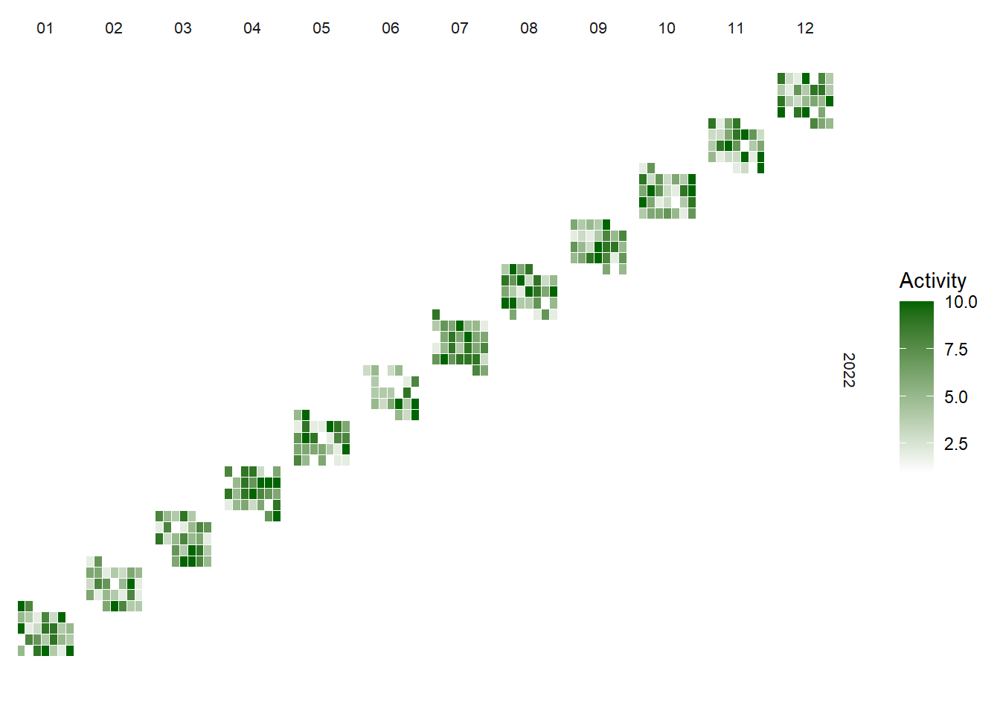
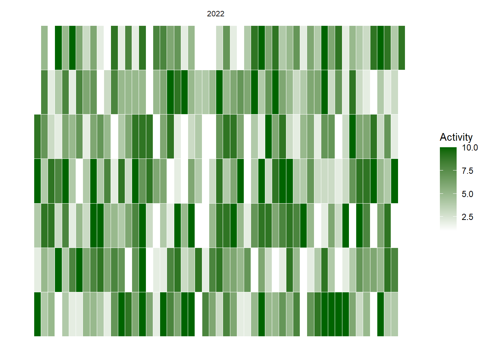
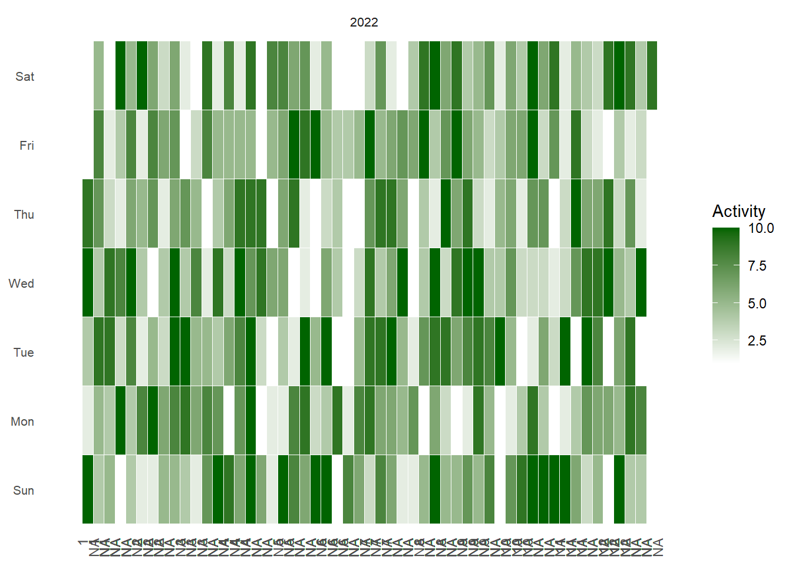
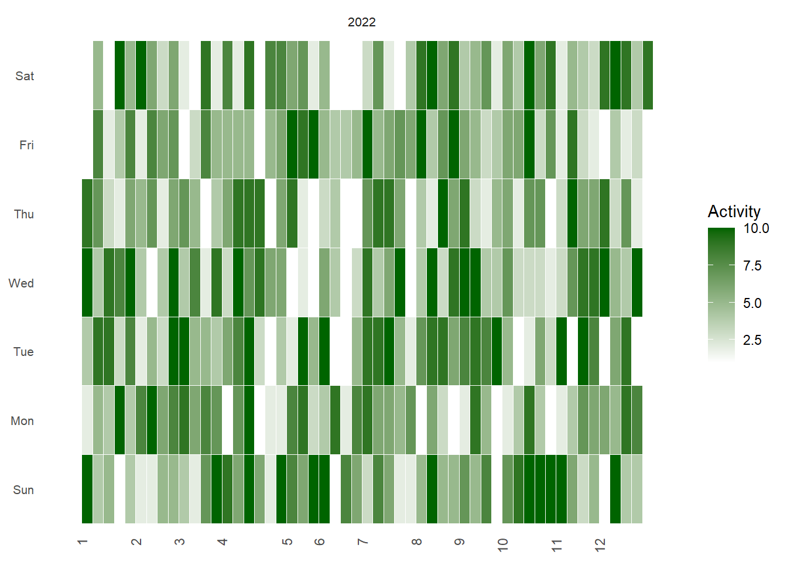
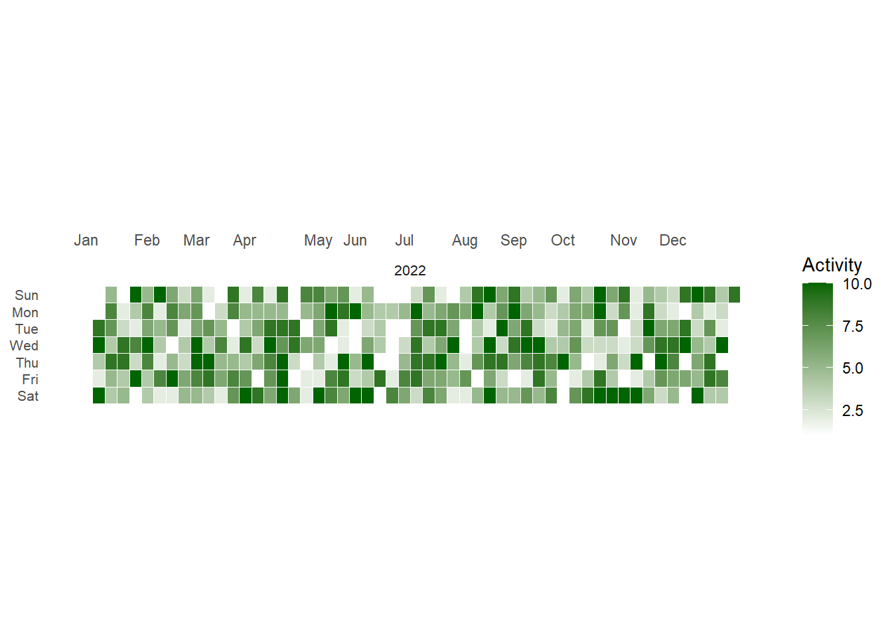
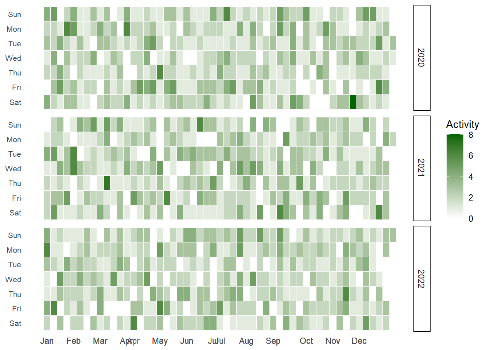
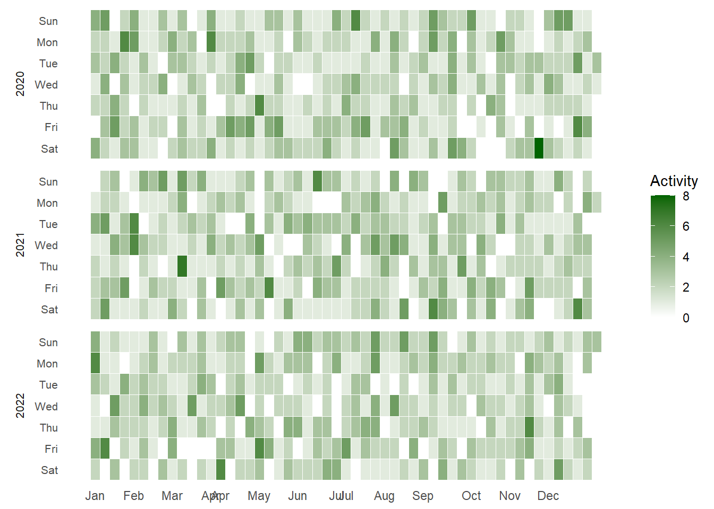
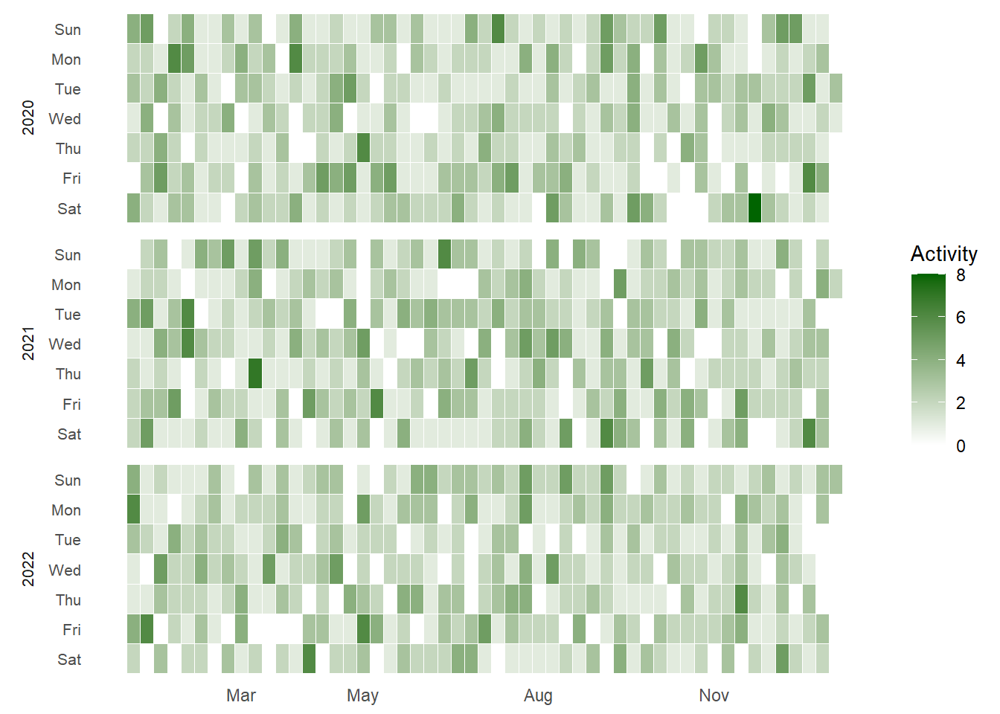

Warning: package 'tidyverse' was built under R version 4.2.2
Warning: package 'ggplot2' was built under R version 4.2.2
Warning: package 'tidyr' was built under R version 4.2.2
Warning: package 'readr' was built under R version 4.2.2
Warning: package 'purrr' was built under R version 4.2.2
Warning: package 'dplyr' was built under R version 4.2.2
Warning: package 'stringr' was built under R version 4.2.2
Warning: package 'forcats' was built under R version 4.2.2
Warning: package 'lubridate' was built under R version 4.2.2
── Attaching core tidyverse packages ──────────────────────── tidyverse 2.0.0 ──
✔ dplyr 1.1.0 ✔ readr 2.1.4
✔ forcats 1.0.0 ✔ stringr 1.5.0
✔ ggplot2 3.4.1 ✔ tibble 3.1.8
✔ lubridate 1.9.2 ✔ tidyr 1.3.0
✔ purrr 1.0.1
── Conflicts ────────────────────────────────────────── tidyverse_conflicts() ──
✖ dplyr::filter() masks stats::filter()
✖ dplyr::lag() masks stats::lag()
ℹ Use the conflicted package (<http://conflicted.r-lib.org/>) to force all conflicts to become errors
set.seed(42)data <-tibble(date =seq(as.Date('2022-01-01'), as.Date('2022-12-31'), by ='day'),count =sample(1:10, 365, replace =TRUE))
# Function to calculate week of the yearweek_of_year <-function(date) { yday <- lubridate::yday(date) wday <- lubridate::wday(date)return((yday - wday +10) %/%7)}# Applying the function to datadata <- data %>%mutate(year =format(date, "%Y"),month =format(date, "%m"),week =week_of_year(date),wday =wday(date, label =TRUE) )ggplot(data, aes(x = week, y = wday, fill = count)) +geom_tile(color ="white") +scale_fill_gradientn(colors =c("white", "darkgreen")) +facet_grid(year~month, scales ="free", space ="free") +coord_flip() +theme_minimal() +theme(axis.text =element_blank(),axis.title =element_blank(),panel.grid =element_blank(),strip.text =element_text(size =8)) +labs(fill ="Activity")

# Create a function to calculate the week number from a date for the whole year.calc_week <-function(date) {as.numeric(format(date, "%U")) +ifelse(format(date, "%w") ==0, 1, 0)}data <- data %>%mutate(wday =factor(wday(date, label =TRUE), levels =rev(levels(wday(date, label =TRUE)))),week =calc_week(date),year =year(date) )# Use ggplot to create the calendar plotggplot(data, aes(x = week, y = wday, fill = count)) +geom_tile(color ="white") +scale_fill_gradientn(colors =c("white", "darkgreen")) +theme_minimal() +theme(axis.text =element_blank(),axis.title =element_blank(),panel.grid =element_blank(),strip.text =element_text(size =8)) +labs(fill ="Activity") +facet_wrap(~year, ncol =1)

# We'll add an additional 'month_label' column that only includes the first week of each month.data <- data %>%mutate(wday =factor(wday(date, label =TRUE), levels =rev(levels(wday(date, label =TRUE)))),week =calc_week(date),year =year(date),month_label =ifelse(day(date) <=7, month(date, label =TRUE), NA) )# Use ggplot to create the calendar plotggplot(data, aes(x = week, y = wday, fill = count)) +geom_tile(color ="white") +scale_fill_gradientn(colors =c("white", "darkgreen")) +theme_minimal() +theme(axis.text.x =element_text(angle =90, hjust =1),axis.text.y =element_text(size =8),axis.title =element_blank(),panel.grid =element_blank(),strip.text =element_text(size =8)) +labs(fill ="Activity") +facet_wrap(~year, ncol =1) +scale_x_continuous(breaks = data$week, labels = data$month_label) +scale_y_discrete(labels =rev(levels(data$wday)))

# Generate labels data framelabels <- data %>%filter(day(date) ==1) %>%select(week, month_label)# Use ggplot to create the calendar plotggplot(data, aes(x = week, y = wday, fill = count)) +geom_tile(color ="white") +scale_fill_gradientn(colors =c("white", "darkgreen")) +theme_minimal() +theme(axis.text.x =element_text(angle =90, hjust =1),axis.text.y =element_text(size =8),axis.title =element_blank(),panel.grid =element_blank(),strip.text =element_text(size =8)) +labs(fill ="Activity") +facet_wrap(~year, ncol =1) +scale_x_continuous(breaks = labels$week, labels = labels$month_label) +scale_y_discrete(labels =rev(levels(data$wday)))

# Generate labels data framelabels <- data %>%filter(day(date) ==1) %>%select(week, date) %>%mutate(month_label =format(date, "%b"))# Create a vector of breaks and labels for the x-axisbreaks_x <- labels$weeklabels_x <- labels$month_label# Use ggplot to create the calendar plotggplot(data, aes(x = week, y = wday, fill = count)) +geom_tile(color ="white") +scale_fill_gradientn(colors =c("white", "darkgreen")) +theme_minimal() +theme(axis.text.x.top =element_text(angle =0, hjust =0.5, vjust=0.5),axis.text.y =element_text(size =8),axis.title =element_blank(),panel.grid =element_blank(),strip.text =element_text(size =8) ) +labs(fill ="Activity") +facet_wrap(~year, ncol =1) +scale_x_continuous(breaks = breaks_x, labels = labels_x, position ="top") +scale_y_discrete(labels =levels(data$wday)) +theme(aspect.ratio =1/6)

# Create a dataset for 3 yearsset.seed(123)data <-tibble(date =seq(as.Date("2020-01-01"), as.Date("2022-12-31"), by ="day"),count =rpois(length(date), 2)) %>%mutate(wday =wday(date, label =TRUE),week =week(date),year =year(date),month_label =ifelse(day(date) ==1, format(date, "%b"), NA) )# Generate labels data framelabels <- data %>%filter(!is.na(month_label)) %>%select(week, month_label)# Create a vector of breaks and labels for the x-axisbreaks_x <- labels$weeklabels_x <- labels$month_label# Use ggplot to create the calendar plotggplot(data, aes(x = week, y = wday, fill = count)) +geom_tile(color ="white") +scale_fill_gradientn(colors =c("white", "darkgreen")) +theme_minimal() +theme(axis.text.x.bottom =element_text(angle =0, hjust =0.5, vjust=0.5),axis.text.y =element_text(size =8),axis.title =element_blank(),panel.grid =element_blank(),strip.text.x =element_text(size =8),strip.background =element_rect(fill ="white") ) +labs(fill ="Activity") +facet_grid(year ~ ., switch ="x") +scale_x_continuous(breaks = breaks_x, labels = labels_x) +scale_y_discrete(labels =rev(levels(data$wday))) # This reverses the y-axis

# Create a dataset for 3 yearsset.seed(123)data <-tibble(date =seq(as.Date("2020-01-01"), as.Date("2022-12-31"), by ="day"),count =rpois(length(date), 2)) %>%mutate(wday =wday(date, label =TRUE),week =week(date),year =year(date),month =month(date),month_label =ifelse(day(date) ==1, format(date, "%b"), NA) )# Generate labels data framelabels <- data %>%filter(!is.na(month_label)) %>%distinct(week, .keep_all =TRUE)# Create a vector of breaks and labels for the x-axisbreaks_x <- labels$weeklabels_x <- labels$month_label# Use ggplot to create the calendar plotggplot(data, aes(x = week, y = wday, fill = count)) +geom_tile(color ="white") +scale_fill_gradientn(colors =c("white", "darkgreen")) +theme_minimal() +theme(axis.text.x.bottom =element_text(angle =0, hjust =0.5, vjust=0.5),axis.text.y =element_text(size =8),axis.title =element_blank(),panel.grid =element_blank(),strip.text =element_text(size =8),strip.placement ="outside",strip.background =element_blank() ) +labs(fill ="Activity") +facet_grid(as.factor(year) ~ .,scales ="free_x",space ="free_x",switch ="y",labeller = label_parsed ) +scale_x_continuous(breaks = breaks_x, labels = labels_x) +scale_y_discrete(labels =rev(levels(data$wday))) # This reverses the y-axis

# Create a dataset for 3 yearsset.seed(123)data <-tibble(date =seq(as.Date("2020-01-01"), as.Date("2022-12-31"), by ="day"),count =rpois(length(date), 2)) %>%mutate(wday =wday(date, label =TRUE),week =week(date),year =year(date),month =month(date),month_label =ifelse(day(date) ==1&wday(date) ==1, format(date, "%b"), NA) )# Generate labels data framelabels <- data %>%filter(!is.na(month_label)) %>%distinct(week, .keep_all =TRUE)# Create a vector of breaks and labels for the x-axisbreaks_x <- labels$weeklabels_x <- labels$month_label# Use ggplot to create the calendar plotggplot(data, aes(x = week, y = wday, fill = count)) +geom_tile(color ="white") +scale_fill_gradientn(colors =c("white", "darkgreen")) +theme_minimal() +theme(axis.text.x.bottom =element_text(angle =0, hjust =0.5, vjust=0.5),axis.text.y =element_text(size =8),axis.title =element_blank(),panel.grid =element_blank(),strip.text =element_text(size =8),strip.placement ="outside",strip.background =element_blank() ) +labs(fill ="Activity") +facet_grid(as.factor(year) ~ .,scales ="free_x",space ="free_x",switch ="y",labeller =labeller(year = label_both) ) +scale_x_continuous(breaks = breaks_x, labels = labels_x) +scale_y_discrete(labels =rev(levels(data$wday))) # This reverses the y-axis

# Create a dataset for 3 yearsset.seed(123)data <-tibble(date =seq(as.Date("2020-01-01"), as.Date("2022-12-31"), by ="day"),count =rpois(length(date), 2)) %>%mutate(wday =wday(date, label =TRUE),week =week(date),year =year(date),month =month(date),month_label =ifelse(day(date) ==1| (month(date) !=lag(month(date))), format(date, "%b"), NA) )# Generate labels data framelabels <- data %>%filter(!is.na(month_label)) %>%distinct(week, .keep_all =TRUE)# Create a vector of breaks and labels for the x-axisbreaks_x <- labels$weeklabels_x <- labels$month_label# Define a custom labeller functioncustom_labeller <-function(variable,value){return(as.character(value))}# Use ggplot to create the calendar plotggplot(data, aes(x = week, y = wday, fill = count)) +geom_tile(color ="white") +scale_fill_gradientn(colors =c("white", "darkgreen")) +theme_minimal() +theme(axis.text.x.bottom =element_text(angle =0, hjust =0.5, vjust=0.5),axis.text.y =element_text(size =8),axis.title =element_blank(),panel.grid =element_blank(),strip.text =element_text(size =8),strip.placement ="outside",strip.background =element_blank() ) +labs(fill ="Activity") +facet_grid(as.factor(year) ~ .,scales ="free_x",space ="free_x",switch ="y",labeller = custom_labeller ) +scale_x_continuous(breaks = breaks_x, labels = labels_x) +scale_y_discrete(labels =rev(levels(data$wday))) # This reverses the y-axis
Warning: The `labeller` API has been updated. Labellers taking `variable` and `value`
arguments are now deprecated.
ℹ See labellers documentation.